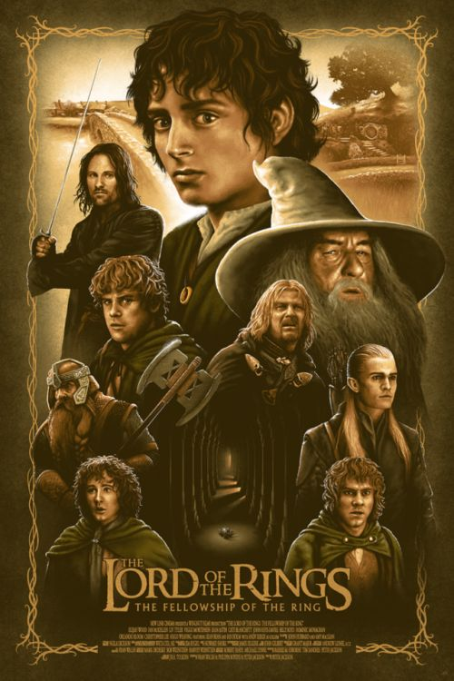
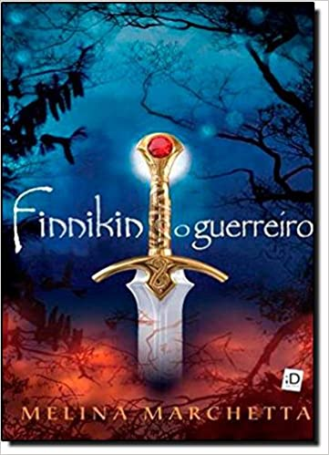
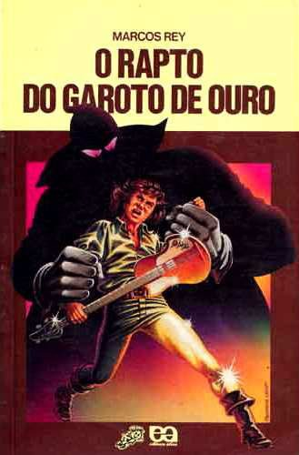
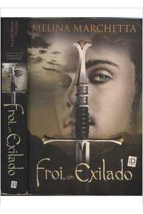
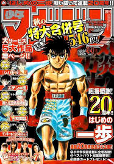
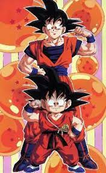
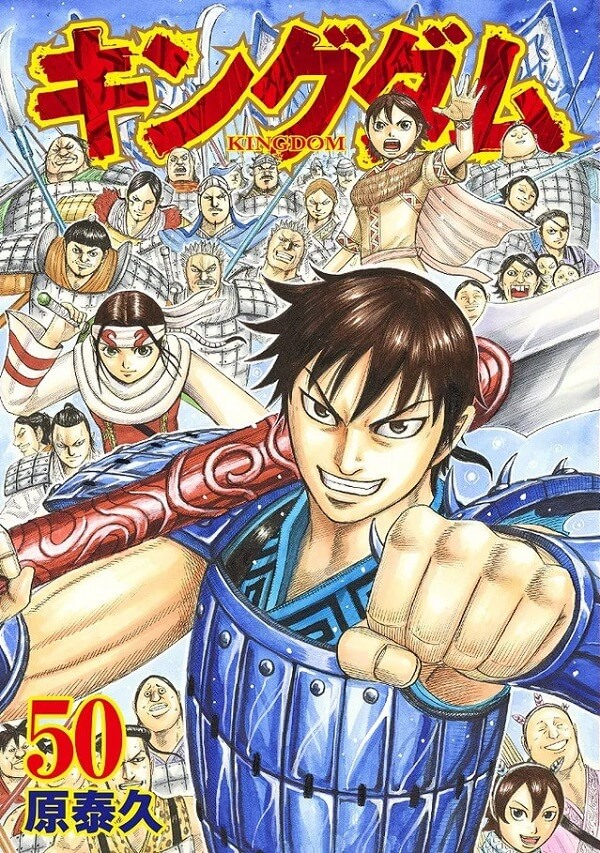
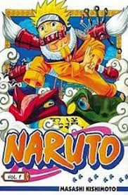
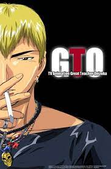

Universo da Leitura
Descobrir, apoiar e promover o talento literário, objetivando oferecer aos leitores de todo o mundo obras publicadas nos mais diversos gêneros, todas com qualidade e estética exemplar. Essa é a nossa missão. Venha nos conhecer!

Senhor dos Anéis - A sociedade do anel
No universo de J.R.R. Tolkien,
a trilogia acompanha uma jornada pelo destino da Terra-média. Sauron, o senhor do escuro,
está desperto e erguendo suas forças novamente - e ele está em busca do seu objeto de poder mais valioso,
uma coisa pequena e aparentemente inofensiva que pode mudar o curso da guerra: um anel.
E esse anel está em posse da criatura mais inesperada que se poderia imaginar: um hobbit.
A história narra o conflito contra o mal que se alastra pela Terra-média, através da luta de várias raças -
Humanos, Anãos, Elfos, Ents e Hobbits -
contra Orques, para evitar que o "Anel do Poder" volte às mãos de seu criador Sauron, o Senhor Sombrio.
Comprar

Finnikin, O guerreiro
Aos nove anos de idade, Finnikin está no alto da rocha das três maravilhas com o Príncipe Balthazar e Luciano,
seus melhores amigos. Juntos firmam um pacto de sangue para proteger seu reino, Lumatere. Mal sabem eles que em
seguida ocorrerão os 'cinco dias do inominável', durante os quais a família real é brutalmente assassinada,
um rei impostor assume o trono e uma maldição cai sobre aqueles que permanecem entre os muros do reino.
Os que fogem ficam fadados a vagar como exilados. Será que, depois de tanto tempo, ainda há esperança para Lumatere e seu povo?
A verdade por trás dessa história poderá colocar em prova a fé de Finnikin em si próprio e no seu destino.
Comprar

Fliz ano velho
Feliz ano velho é o primeiro livro de Marcelo Rubens Paiva. Aos vinte anos, ele sobe em uma pedra e mergulha numa
lagoa imitando o Tio Patinhas.
A lagoa é rasa, ele esmigalha uma vértebra e perde os movimentos do corpo.
Escrito com sentido de urgência, o livro relata as mudanças irreversíveis na vida do garoto a partir do acidente.
Ele é transferido de um hospital a outro, enfrenta médicos reticentes, luta para conquistar pequenas reações do corpo.
Aos poucos, se dá conta de sua nova realidade, irreversível. E entende que é preciso lutar.
O texto expressa a irreverência e a determinação da juventude, mesmo na adversidade, e a
compreensão precoce “de que o futuro é uma quantidade infinita de incertezas”.
Comprar

O rapto do garoto de ouro
Madame Santa, a modista especializada em vestidos de noiva.
Mário Batalglia, negociante de cães de raça. Heitor Salvattore, campeão de braço-de-ferro.
Zorba, ex-marinheiro e ex-vendedor de enciclopédias. Entre os quatro, há uma coisa em comum:
estão todos na lista dos jovens detetives Leo, Gino e Ângela, como suspeitos. Mas qual deles poderia ter
raptado o Garoto de Ouro, um jovem cantor que é sequestrado antes de seu show?
Como pista apenas uma agenda com nome e endereços.
Comprar

Froi - Um exilado
Três anos depois do fim da maldição sobre Lumatere, o explosivo Froi aprende a controlar
seu temperamento difícil e passa a integrar a guarda que protege a família real, tornando-se extremamente
leal à rainha Isaboe e ao seu marido Finnikin. Por isso, ele é escolhido para uma missão secreta.
Deve matar o rei de Charyn, um reino vizinho, onde há dezoito anos existe um grande mistério: não há nenhum nascimento.
Quando Froi chega a Charyn, porém, ele percebe que sua história
está muito mais ligada àquele lugar do que ele imaginava.
A partir daí, ele começa a descobrir sua verdadeira origem.
Comprar

Hajime no Ippo
Ippo Makunouchi tem 16 anos, mas nunca faz coisas da sua idade. Seus dias consistem em ajudar
sua mãe na loja de aluguel de barcos de pescaria e estudar. Certo dia, Ippo apanha de uns
garotos que o cercam a caminho de casa, mas é salvo por um grande lutador de Boxe.
Curioso sobre o Ippo, ele pede que o menino mostre algum soco no saco de areia e acaba se
impressionando com seu talento nato.
Comprar

Dragon Ball Z
Tudo começa com o pequeno garoto Son Goku, que mora sozinho na Montanha Paozu. Ele foi achado numa floresta pelo
velho Son Gohan, que o ensinou artes marciais. Numa noite, Son Gohan foi morto por um monstro misterioso. Ágil,
forte e sem nenhum sinal de maldade dentro de si. Goku se difere das outras pessoas por ter um rabo de macaco.
A história começa quando Goku conhece a garota Bulma. Ela o convence a ajuda-lá na busca pelas Esferas do Dragão que,
quando reunidas, invocam o Deus Dragão Shenlong que pode realizar um desejo. Com o tempo, Goku vai crescendo,
fazendo novas amizades e livrando o mundo do Imperador Pilaf, as Forças Red Ribbon e o temível Piccolo Daimaoh.
Comprar

Kingdom
Milhões de anos se passaram desde a era das lendas, quando o mundo dos homens e dos deuses eram iguais. Nessa época,
a ambição do homem movia o mundo. Essa é a era da guerra dos 500 anos: o período de guerras das primaveras e outonos.
Kingdom é a história de um jovem chamado Shin e dos desafios pelos quais ele passou até se tornar um grande general!!!
Comprar

Naruto
Naruto Uzumaki é um menino que vive em Konohagakure ou simplesmente Konoha ou Vila Oculta da Folha, a vila ninja do
País do Fogo. Quando ainda bebê, Naruto teve aprisionada em seu corpo a Kyūbi no Yōko por Minato Namikaze
(quarto Hokage, e seu pai), com a finalidade de salvar a Vila da Folha. Desde então, Naruto é visto por muitas pessoas
como um monstro, não só pelos familiares das pessoas mortas pela Kyūbi, mas também por pessoas que não toleram suas
brincadeiras, já que o mesmo é extremamente hiperativo, incompreendido e solitário. Naruto
sonha em se tornar o Hokage de sua vila, um ninja poderoso e respeitado, para assim poder ser reconhecido por todos.
Comprar

Great Teacher Onizuka - GTO
1997, Eikichi Onizuka, 22, “solteiro e livre como o ar” , é um jovem professor com um passado questionável que é
nomeado para seu primeiro cargo em uma classe difícil; ele rapidamente mostra uma visão de ensino totalmente fora de
sintonia com as práticas usuais. Suas reações não convencionais e diretas, muitas vezes humorísticas, são o eixo
central desta série. Ele vai evoluir com essa turma,
cuja especialidade é fazer seus professores racharem moralmente, tentando mobilizá-los aos poucos em sua causa.
Comprar